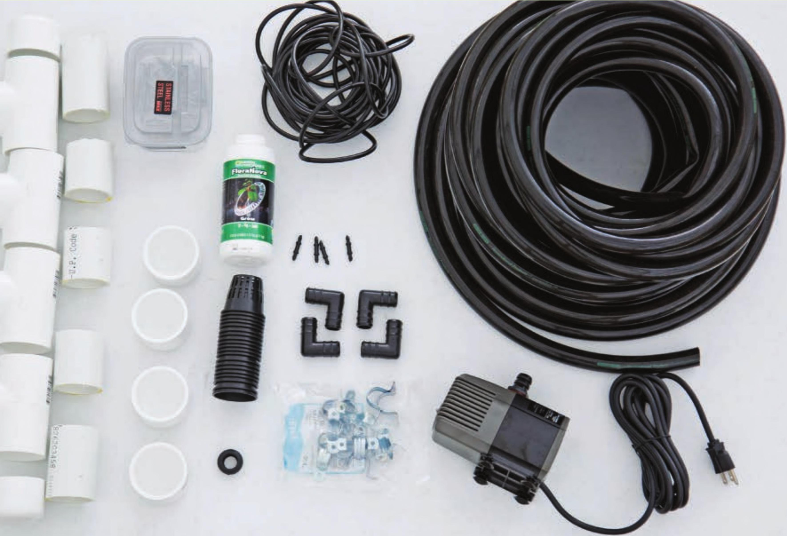

HOW TO BUILD AN NFT GARDEN Note: This system uses the floating raft garden detailed earlier in this chapter as a reservoir (see pages 50 to 59). It is not necessary to build the floating raft garden to build this NFT garden. A prefabricated reservoir can be purchased or a reservoir can be made from a variety of repurposed materials, such as an opaque plastic tote. If growing in a warm environment, it is often advantageous to bury the reservoir to keep the nutrient solution cool. MATERIALS Frame Channels 1 Zip tie 2 2 x 6" x 8' lumber 3 2" PVC, 10' 9 3/4n EMT straps 2 2 x 4" x 8' lumber 22 2" net pots 1 3/4n gasket 1 gal. White water-based latex 4 1A" straight double barbed primer, sealer, and Irrigation connectors stain-blocker 4 2" PVC tee 1 Submersible water pump, 550 GP (KILZ 2 LATEX) 6 2" PVC end cap 1 lb. #1 0 x 2Vi" exterior screws 4 3A" elbow Optional Lighting for Lower Level 1 lb. #8 x 1 W exterior screws ir 3A" black vinyl tubing 1 4' six-tube T5 grow light 3' 1A" black vinyl tubing 1 Light hanger 72 DIY HYDROPONIC GARDENS
